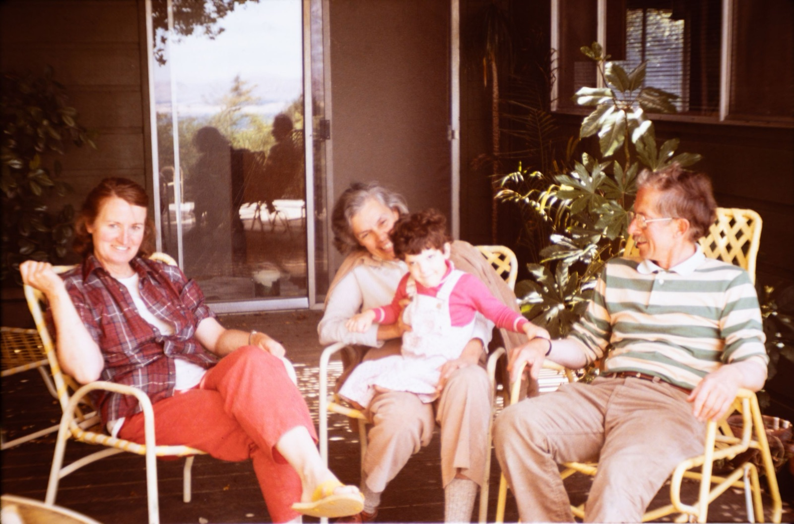
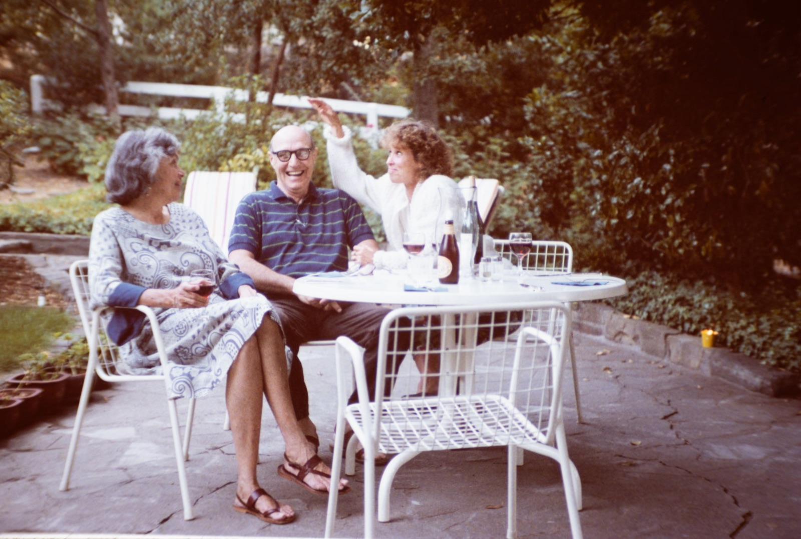
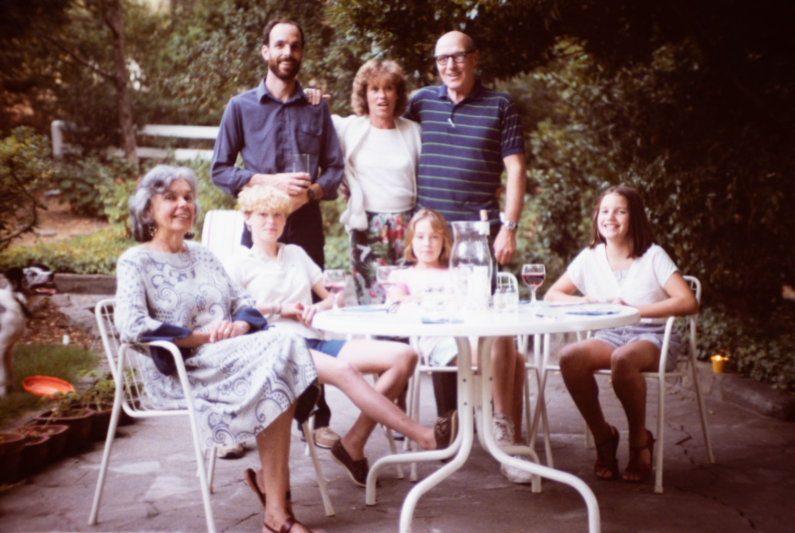
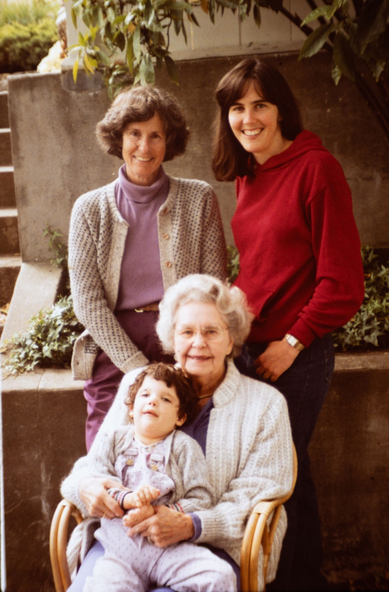
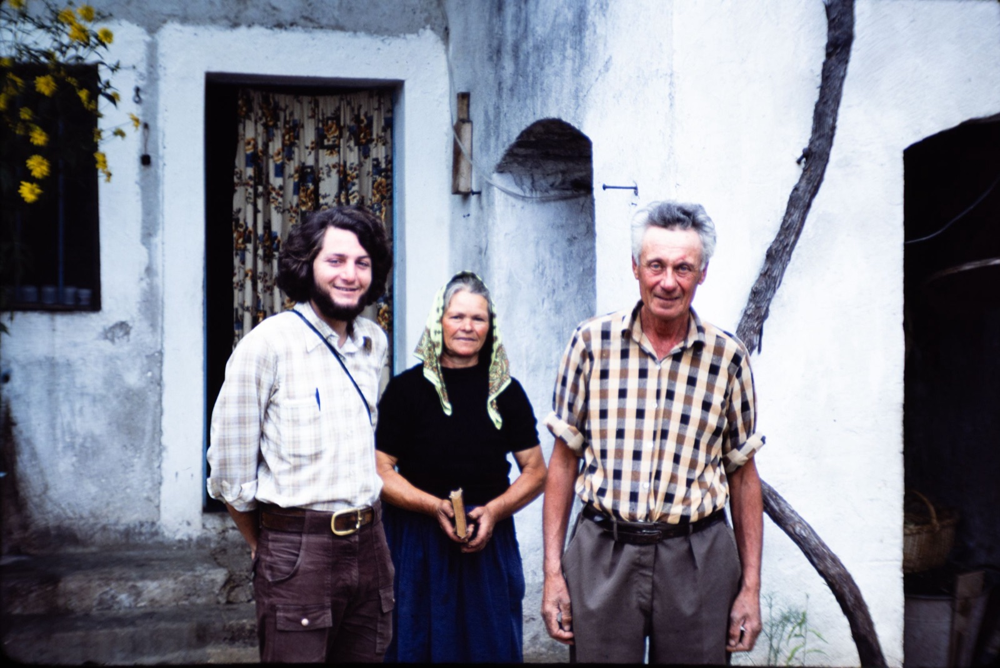
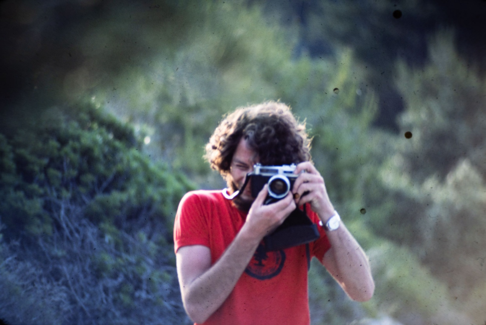
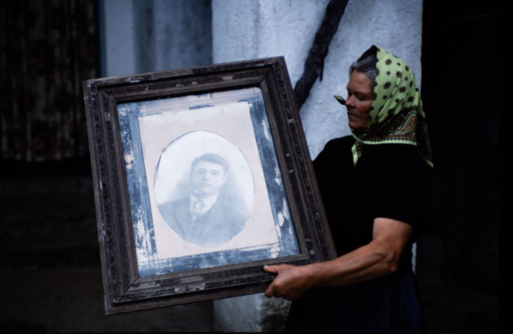

“After nearly fifty years, photos I thought were forgotten helped reconnect a family with images of their grandparents and great-grandmother that had been lost forever. There is no way to put a value on that.”Steven





Preserved Despite War
My name is Steven Mackey. In 1976, when I was 20 years old, I went on a trip to Europe with two friends whom I had known since I was 10 years old. One of my friends, named Fred, had a plan to visit the Croatian fishing village from where his Grandfather had come. Fred’s Grandfather had left the small fishing village of Jezera (pronounced Yay-zehra) on the island of Murter in Croatia back in 1917 to head for America, and since that time, neither he nor any of his offspring had returned to Jezera. Fred’s visit would prove to be a momentous occasion for the entire village, as the Family Pirjak was one of the largest families in the village. The three days we spent in Jezera were filled with visits to many of Fred’s relatives, most of whom he had never heard of. I had brought with me a 35mm Konica single lens reflex camera, and I took numerous pictures in 35mm slide format.
Fifty years later, in 2026, my wife and I were invited to a wedding which was to be held on the island of Idra in Greece. Since Greece was not far from Croatia, I decided to revisit the island of Murter and see if anyone I had met in 1976 was still there in Jezera. Before we left on our journey, I decided to dig up my old slides and see if I could make them accessible to anyone I might meet who would enjoy seeing the old pictures. I learned about Britton Platt’s ability to digitize old slides from his Grandmother. After a short amount of time, Britton had digitized some of the slides I had selected for preserving. I made 4x6 prints from the JPEG files Britton had provided and took them with me on my trip.
We were able to contact the wife (Dragana) of one of Fred’s relatives, Marijo, who lived in Jezera, and it turned out they had an apartment she rented to travelers regularly. It worked out perfectly for us to stay at the apartment for the weekend during our visit, and we would get occasional visits from Marijo’s wife. She drove us over to meet one of Fred’s cousins, whom we met back in 1976. While visiting with him, I pulled out the prints and showed them to him. He was the subject of some of the pictures, and as I was also the subject of some pictures, we both commented on how much we had changed during all the intervening years.
As we were looking at the prints, Dragana was also viewing them, and at one point, she gasped and declared that one of the pictures was of Marijo’s Grandparents. She proceeded to tell us that during the Bosnian-Croatian war in the early 1990’s, Marijo’s family home on the mainland was subjected to the horrors of war and during the conflict, they were forced to abandon their house without delay and were unable to collect any of their valuables. As a result, Marijo had no pictures of his Grandparents and Dragana knew that he would be delighted to see the few pictures I had brought with me. We later learned that not only were Marijo’s Grandparents in the picture, but standing off to the side in one picture was Marijo’s Great Grandmother. There is no way to put a value on the impact of having digitized those old slides, but I am glad that Britton was able to provide that service for me, and Marijo is happy to finally have old photos of his Grandparents and of his Great Grandmother.
— Steven


“She proceeded to tell us that during the Bosnian-Croatian war (…), they were forced to abandon their house without delay and were unable to collect any of their valuables. As a result, Marijo had no pictures of his Grandparents.”